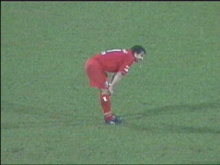

|
Roda JC - FC Twente (2-1) 26 januari 2002 |
Er stond een westenwind, kracht 6-7!
Er waren ongeveer 250 Twente-supporters.
Rodarakkervoetbalmeisjes.
Na 2 minuten kon Twente al lachen toen Vrede
een balletje van Booth in eigen doel tikte.
Deze is op speciaal verzoek van Rodapride ;-)

Storm en regen.
Schwalbe(?) van Soetaers bleef onbestraft.
Voor € 13 is deze Roda-Milansjaal te koop.
Twente kreeg het steeds moeilijker tegen het
aandringende Roda. Het muurtje bereidt zich voor
op een vrije trap van Luijpers.
Vicelich heeft in de 78e minuut de gelijkmaker
gescoord.
Een minuut later lanceert Sonko een raket: 2-1.
Vrolijke mensen op zuid.
Na een korte hoekschop dolt Nygaard zijn
opponent. Nu is het Roda dat alle tijd heeft!
Deze handsbal werd niet bestraft.

Game over!
3 zeer belangrijke punten zijn binnen.
©KPD